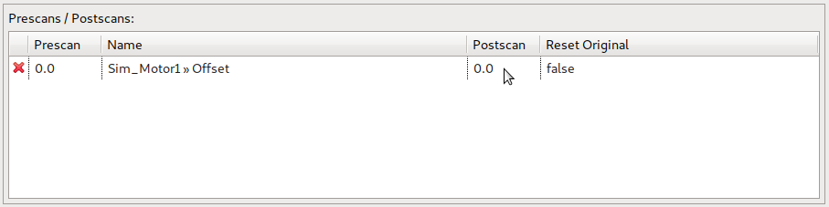

Several properties of a Pre-/Postscan added to a scan module can be modified within the Pre-/Postscan table of the SM Prescan / Postscan / Positioning / Plot View. Editing the different attributes is explained in detail below.
A new entry can be added with the context menu (right-click). After selecting Prescan or Postscan a device or option can be selected:
If an entry of a certain device or option already exists, but no Postscan is set (shown as “-”), a Postscan can be added by clicking in the column:
After clicking into the column a Postscan with a default value is created (which can be edited later):

Options or devices with discrete values get one of their discrete values as default:
Adding a Prescan works the same way. Existing entries can be deleted later.
An existing value of a Prescan or Postscan can be edited by clicking in the corresponding column. The edited text is applied with enter or discarded with escape:
If the device or option to be edited is discrete a combo box is opened instead:
Postscans have an additional (boolean) attribute reset original. The state is toggled between true and false by clicking on the value:

An existing Prescan or Postscan can be removed by clicking in the column (for editing), removing the text and applying with enter:
For discrete values the additional entry “-” in the combo box has to be selected to remove the Prescan or Postscan:
If after removing a Pre- or Postscan neither exists, the entry is removed completely:
A complete entry (with Prescan, Postscan or both) can also be removed via context menu: